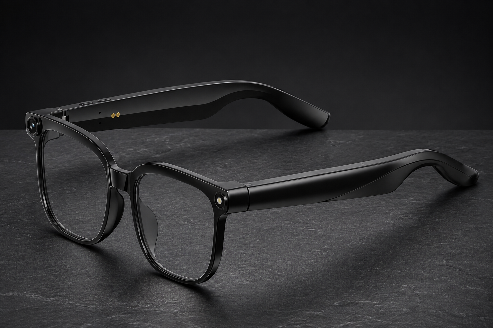
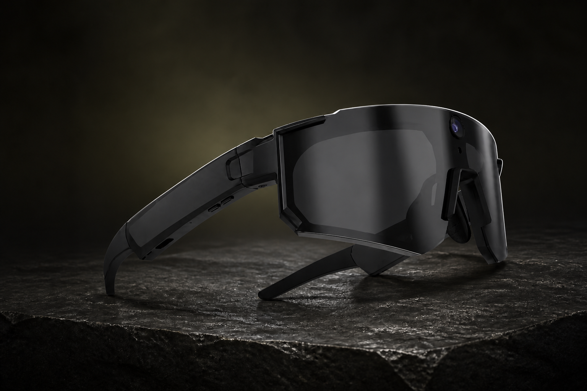

Classic
ליוצרי תוכן, צלמים ולשימוש יומיומי
349 ₪
כולל מע״מ · משלוח חינם
למפרט ולרכישה ←לצלם רגע בלי להחזיק מצלמה, להאזין למוזיקה ולענות לשיחה — משקפיים חכמים מרכזים כמה שימושים במסגרת אחת. ב־LUNO יש שני דגמים שחורים: Classic לשימוש יומיומי ו־Extreme Edition בעיצוב ספורטיבי עוטף. הטכנולוגיה בשניהם זהה; הבחירה מתחילה באופן שבו אתם רוצים להשתמש בהם.

ליוצרי תוכן, צלמים ולשימוש יומיומי
כולל מע״מ · משלוח חינם
למפרט ולרכישה ←
לחיילים, יוצרי תוכן ולעוסקים בספורט אקסטרים
כולל מע״מ · משלוח חינם
למפרט ולרכישה ←אם אתם מחפשים משקפיים עם מצלמה ליצירת תוכן, לצילום רגעים ביום־יום או לדרך לעבודה, Classic מציע מסגרת בקווים נקיים. אם אתם מעדיפים מראה ספורטיבי עוטף לשטח ולפעילות, Extreme Edition מיועד לחיילים, ליוצרי תוכן ולעוסקים בספורט אקסטרים. אין צורך לבחור בין יכולות צילום או שמע שונות: המפרט המשותף נמצא בשני הדגמים.
| מה משווים? | Classic | Extreme Edition |
|---|---|---|
| מחיר נוכחי | 349 ₪ | 359 ₪ |
| סגנון ושימוש | מסגרת קלאסית, צילום ותוכן ביום־יום | מסגרת ספורטיבית עוטפת, שטח ואקסטרים |
| צילום תמונות | 8MP | 8MP |
| צילום סרטונים | 1080p | 1080p |
| אחסון | 32GB | 32GB |
| קישוריות ושיחות | Bluetooth, מיקרופון ורמקולים | Bluetooth, מיקרופון ורמקולים |
| סוללה | עד 4 שעות צילום רצופות | עד 4 שעות צילום רצופות |
המצלמה המובנית מצלמת תמונות ברזולוציית 8MP וסרטונים באיכות 1080p. אפשר לצלם בלי להחזיק את הטלפון בזמן הצילום. זו דרך לתעד את נקודת המבט שלכם ביצירת תוכן ובחיי היום־יום. כדי להתרשם מהתוצאה עצמה, צפו בסרטון שצולם עם דגם Extreme או בסרטון ההיכרות עם LUNO.
בשני הדגמים יש חיבור Bluetooth לטלפון, רמקולים להאזנה ישירות לאוזניים ומיקרופון לשיחות. תכונות ה־AI כוללות זיהוי של מה שרואים דרך המצלמה ושיחה בזמן אמת עם ChatGPT — גם על מה שמולכם וגם על שאלות אחרות. את אופן השליטה בכפתורים ובאזור המגע של Extreme אפשר לראות במדריך ההפעלה המאויר.
לצד המשקפיים מגיעים קייס, מטען מהיר ומטלית ניקוי מקצועית. המשלוח חינם, בתוך 7–14 ימי עסקים ממועד אישור ההזמנה. בשני הדגמים ניתנת אחריות להחלפה במקרה תקלה למשך חצי שנה ממועד קבלת המוצר, בכפוף לתנאי האחריות. מידע נוסף על משלוחים והחזרות נמצא בעמוד המשלוחים וביטול העסקה.
להזמנת Classic עם אפשרות להחלפת עדשות לעדשות ראייה, פנו אלינו לפני הרכישה לתיאום הגרסה המתאימה. עדשות המספר והתקנתן אצל אופטיקאי אינן כלולות במחיר המשקפיים. ההתאמה למרשם נעשית אצל אופטיקאי. לפרטים ולתיאום גרסה מתאימה.
למפרט המלא, לתמונות ולבחירת כמות, עברו לעמוד LUNO Classic או LUNO Extreme Edition.